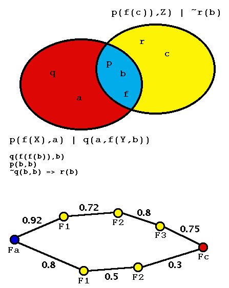

Prophet - Prophesying Axiom Relevance
by Symbol Overlap

Idea
- Select axioms relevant to the given conjecture
- Order axioms according to syntactic criteria
- Decrease chance of selecting a superfluous axiom
Contextual Direct Relevance
- The ratio of symbols shared to symbols used
- Sharing common symbols is not so relevant
- Wanna see the math?
Contextual Indirect Relevance
- A chain is only as strong as its weakest link
- Longer chains are weaker
- A cable is as strong as it's strongest chain
- Wanna see the math?